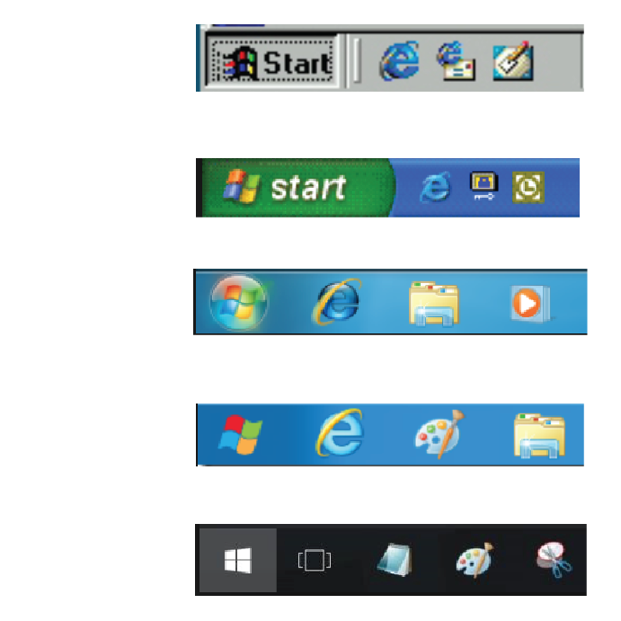
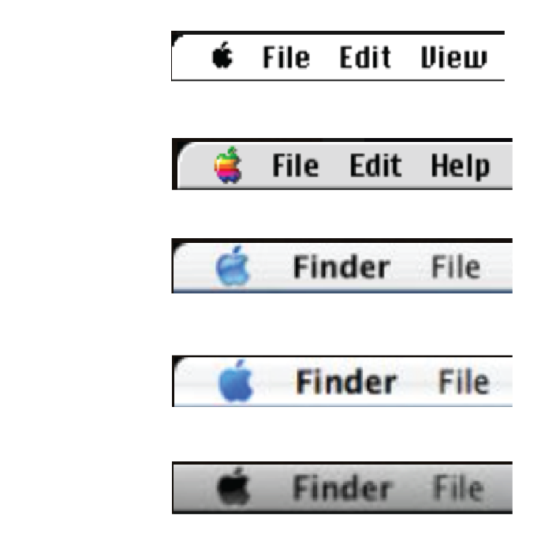

A Brief History of the
Menu Icon
Hamburger Icon
Consist of three parallel
horizontal line
Suggestive of a list
Its resemblance to the layer
in a hamburger
The Creator
Norm Cox
The world's fist graphical user interface
Cofounder of Coz& Hall
Menu Button Demo that made in 1990
The hamburger icon disappered for some time.
When small smart phone appeared, Designer had to look for small icon fit onto 4 inch screen.
iPhone and Face book use it first so it becames popular.
Differnt Menu Icon
The Development of
Windows Menu Icon
Window95 - Window10

Windows 95-Windows 98
1995-2001
Windows XP
2001-2009
Windows 7
2009-2012
Windows 8
2012-2015
Windows 10
2015
The Development of
Mac Menu Icon
System 1 - OS X v10.9

System 1-System 8
1984
System 9
1999
OS X-OS Xv10.3
2001
OS Xv10.4
2005
OS Xv10.5-OS Xv10.10
2007-2014